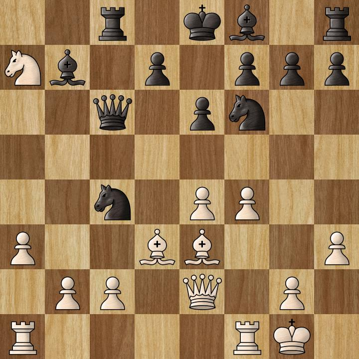

Cliccando sull'immagine qui sopra, si aprirà una nuova scheda del browser in cui potrai vedere il proseguimento della partita.
Tal è lo scacchista con i pezzi neri. In questa posizione, è il turno del nero: la regina in C6 è sotto attacco da parte del cavallo in A7.
Tal non mosse la regina! Con il cavallo nella casa C4 catturò l'alfiere nella casa E3.
L'avversario catturò la regina sacrificata da Tal, ma finì per perdere la partita.